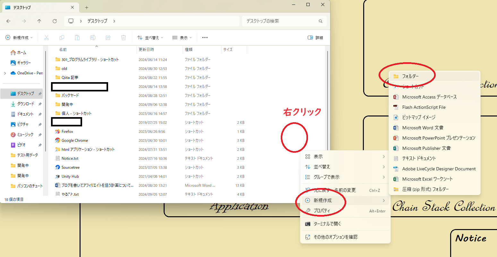

デスクトップにフォルダを作ろう
次にデスクトップにフォルダを作ります。フォルダとは様々なファイルを保管する入れ物の事を言います。ファイルが複数になると管理が煩雑になります。そこでパソコンではフォルダーを使ってファイルを探しやすくします。例えば複数の写真ファイルを日付別に格納したい場合、日付別のフォルダーに格納してファイルを整理します。また、フォルダーの中にフォルダーを作ることもできます。エクスプローラーでデスクトップフォルダを開いた状態でエクスプローラー上で右クリックをして「新規作成 > フォルダ」を選択します。

<< 前へ 次へ >>